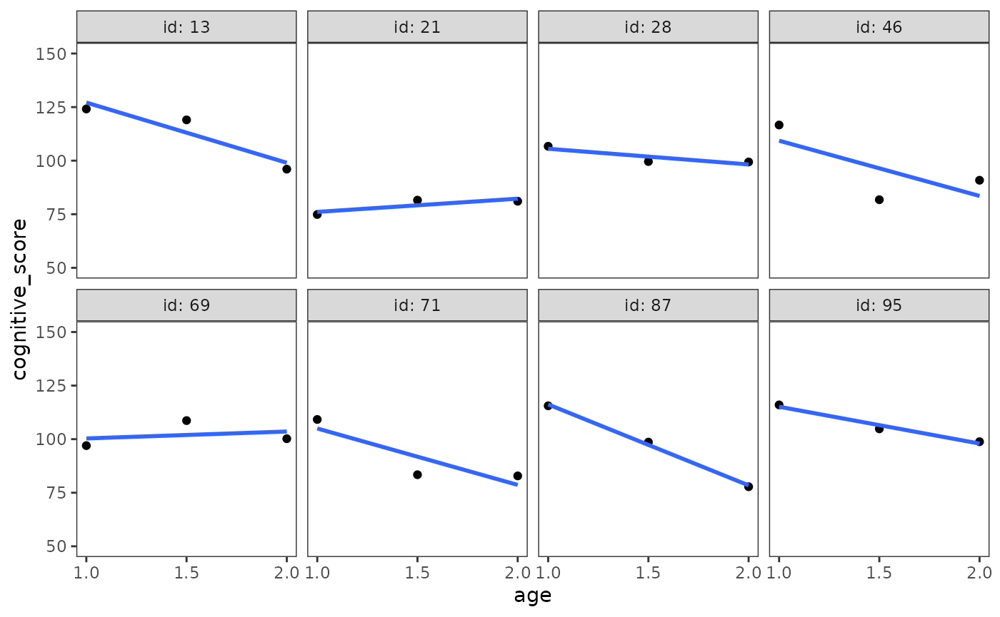
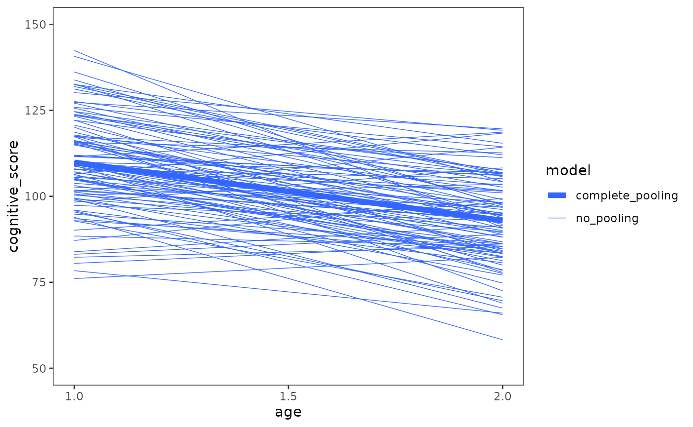
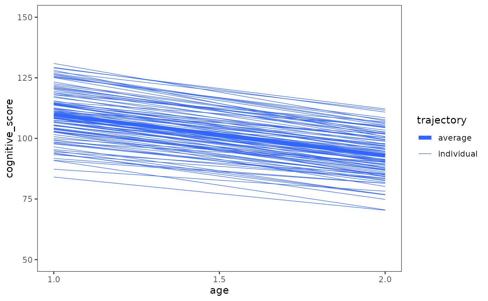
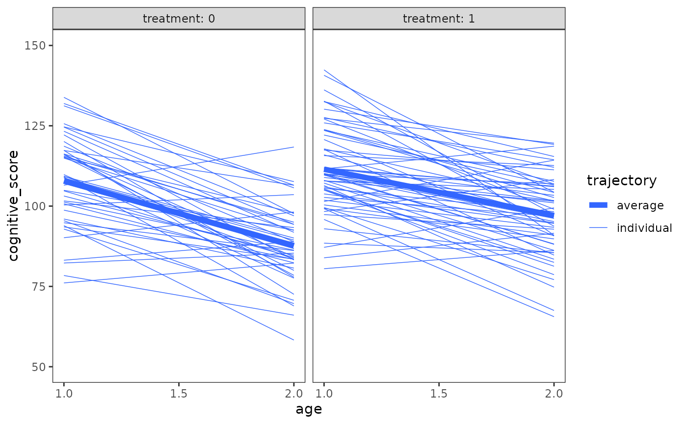
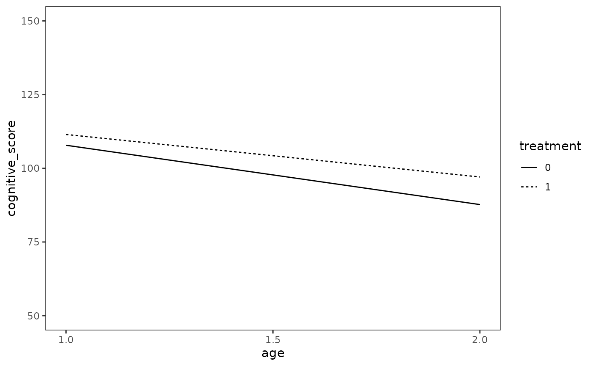

Chapter 3: Introducing the multilevel model for change
Source:vignettes/articles/chapter-3.Rmd
chapter-3.Rmd
library(alda)
library(dplyr)
library(tidyr)
library(purrr)
library(ggplot2)
library(patchwork)
library(lme4)
library(broom.mixed)3.1 What Is the Purpose of the Multilevel Model for Change?
In Chapter 3 Singer and Willet (2003) develop and explain the multilevel model for change using a subset of data from Burchinal, Campbell, Bryant, Wasik, and Ramey (1997), who measured the effect of early educational intervention on cognitive performance in a sample of African-American children at ages 12, 18, and 24 months (i.e., 1.0, 1.5, and 2.0 years).
For this example we use the early_intervention data set,
a person-period data frame with 309 rows and 4 columns:
-
id: Child ID. -
age: Age in years at time of measurement. -
treatment: Treatment condition (control = 0, intervention = 1). -
cognitive_score: Cognitive performance score on one of two standardized intelligence tests: the Bayley Scales of Infant Development (Bayley, 1969) at 12 and 18 months, and the the Stanford Binet (Terman & Merrill, 1972) at 24 months.
Note that for reasons of participant privacy the
early_intervention data set uses simulated data
rather than the real data used by Singer and Willet (2003), so the
examples presented in this article will have similar but not identical
results to those presented in the text.
# Table 3.1, page 48:
early_intervention
#> # A tibble: 309 × 4
#> id age treatment cognitive_score
#> <fct> <dbl> <dbl> <dbl>
#> 1 1 1 1 106.
#> 2 1 1.5 1 91.7
#> 3 1 2 1 74.2
#> 4 2 1 1 112.
#> 5 2 1.5 1 114.
#> 6 2 2 1 119.
#> 7 3 1 0 90.4
#> 8 3 1.5 0 94.7
#> 9 3 2 0 80.4
#> 10 4 1 1 103.
#> # ℹ 299 more rowsTo motivate the need for the multilevel model for change, we begin
with some basic exploration and description of the
early_intervention data.
Starting with the age variable, we can see that each
child’s cognitive performance was measured on the same three occasions
at ages 1.0, 1.5, and 2.0 years, and thus the
early_intervention data uses a time-structured
design.
measurement_occasions <- unique(early_intervention$age)
measurement_occasions
#> [1] 1.0 1.5 2.0
early_intervention |>
group_by(id) |>
summarise(all_occasions = identical(age, measurement_occasions)) |>
pull(all_occasions) |>
unique()
#> [1] TRUENext we’ll look at the time-invariant treatment
variable. Because we’re summarizing a time-invariant predictor, we’ll
transform the data to person-level format with the
pivot_wider() function from the tidyr
package before summarizing.
early_intervention_pl <- pivot_wider(
early_intervention,
names_from = age,
names_prefix = "age_",
values_from = cognitive_score
)
early_intervention_pl
#> # A tibble: 103 × 5
#> id treatment age_1 age_1.5 age_2
#> <fct> <dbl> <dbl> <dbl> <dbl>
#> 1 1 1 106. 91.7 74.2
#> 2 2 1 112. 114. 119.
#> 3 3 0 90.4 94.7 80.4
#> 4 4 1 103. 101. 93.9
#> 5 5 1 103. 75.0 71.7
#> 6 6 0 106. 96.8 93.5
#> 7 7 1 136. 117. 119.
#> 8 8 0 79.8 69.3 67.5
#> 9 9 1 113. 105. 108.
#> 10 10 1 88.2 87.5 85.3
#> # ℹ 93 more rowsA total of 58 children (56.3%) were assigned to participate in the early educational intervention, with the remaining 45 children (43.7%) participating in the control group.
early_intervention_pl |>
group_by(treatment) |>
summarise(count = n()) |>
mutate(proportion = count / sum(count))
#> # A tibble: 2 × 3
#> treatment count proportion
#> <dbl> <int> <dbl>
#> 1 0 45 0.437
#> 2 1 58 0.563As Singer and Willet (2003) discuss, the kind of statistical model needed to represent change processes in longitudinal data like this must include components at two levels:
- A level-1 submodel that describes how individuals change over time, which can address questions about within-person change.
- A level-2 submodel that describes how these changes vary across individuals, which can address questions about between-person differences in change.
Together, these two components form a multilevel model (also known as a linear mixed-effects model or mixed model) for change.
3.2 The Level-1 Submodel for Individual Change
In Section 3.2 Singer and Willet (2003) introduce the level-1 component of the multilevel model for change: The submodel for individual change—also known as the individual growth model—which represents the individual change in the outcome variable that we expect will occur during each time period under study.
Because the individual growth model specifies a common functional form for the individual trajectories, Singer and Willet (2003) suggest preceding level-1 submodel specification with visual inspection of empirical growth plots in order to select the most parsimonious functional form that the observed data could reasonably have come from.
set.seed(567)
# Figure 3.1, page 50:
early_intervention |>
filter(id %in% sample(unique(id), size = 8)) |>
ggplot(aes(x = age, y = cognitive_score)) +
geom_point() +
stat_smooth(method = "lm", se = FALSE) +
scale_x_continuous(breaks = c(1, 1.5, 2)) +
coord_cartesian(ylim = c(50, 150)) +
facet_wrap(vars(id), ncol = 4, labeller = label_both)
Singer and Willet (2003) identify several questions that are helpful to answer when examining empirical growth plots to aid model specification:
- What type of population individual growth model could have generated the observed data?
- Should the population individual growth model be linear or curvilinear with time? Smooth or jagged? Continuous or disjoint?
- Are any nonlinearities in the observed data consistent across individuals? Might they be due to measurement error or random error?
- How many measurement occasions are there? Few or many?
Because the early_intervention data only has three
measurement occasions for each individual, and any nonlinearities in the
observed data are most likely due to measurement error or random error,
Singer and Willet (2003) specify a simple linear model for the level-1
submodel:
\[ \text{cognitive_score}_{ij} = \pi_{0i} + \pi_{1i} (\text{age}_{ij} - 1) + \epsilon_{ij}, \]
which asserts that \(\text{cognitive_score}_{ij}\)—the true
value of cognitive_score for the \(i\)th child at the \(j\)th time—is a linear function of their
age on that measurement occasion, \(\text{age}_{ij}\), and that any deviations
from linearity in the observed data over time are a result of random
error, \(\epsilon_{ij}\).
Here \(\text{age}\) has been
centred to \((\text{age} -
1)\) so that the model intercept, \(\pi_{0i}\), represents the \(i\)th child’s true initial
status—that is, their true \(\text{cognitive_score}\) value at age 1.
This is preferable to using \(\text{age}\) with no centring, as the
intercept in such a model would instead represent the \(i\)th child’s true value of
cognitive_score at age 0, meaning: (1) the uncentred \(\text{age}\) model must predict beyond the
temporal limits of the early_intervention data; and (2)
assume the individual trajectories extend back in time to birth linearly
with age.
Finally, the model slope, \(\pi_{1i}\), represents the true rate of change in the \(i\)th child’s true \(\text{cognitive_score}\) over time—in this case, their true annual rate of change.
Relating the Level-1 Submodel to the Exploratory Methods of Chapter 2
Before fitting this model, we find it helpful to introduce Gelman and Hill’s (2006) concepts of complete pooling, no pooling, and partial pooling in relation to the exploratory linear models we fit in Chapter 2 to summarize both average and individual patterns of change over time.
In a complete pooling model, group indicators for individuals are not included in the model, and a single average trajectory using the information from all individuals is fitted. By definition, a complete pooling model ignores variation between individuals, making it unsuitable for analyzing individual change over time. This corresponds to the average trajectory in the group trajectory plot from Section 2.3.
In a no pooling model, separate within-person models are fit to each person’s data, resulting in an individual trajectory for each individual. However, because each individual’s fitted trajectory ignores information from all other individuals, the no pooling models tend to overfit the data within each individual—potentially overstating the variation between individuals, and making interindividual differences in initial status and rate of change look more different than they actually are. This corresponds to the individual trajectories in the group trajectory plot from Section 2.3.
early_intervention_fit_np <- lmList(
cognitive_score ~ I(age - 1) | id,
pool = FALSE,
data = early_intervention
)The partial pooling model represents a compromise between the two extremes of complete pooling and partial pooling, wherein we fit a single model—here the individual growth model—that takes into account information from each individual, on one hand, and the average of all the individuals, on the other, to determine each individual’s fitted trajectory. By doing this, the partial pooling approach regularizes each individual’s fitted trajectory—pulling more extreme initial statuses and rates of change towards the overall average.
We can fit the level-1 submodel for individual change using the
lmer() function from the lme4 package. The
model formula for the lmer() function takes the form
response ~ fixed_effects + random_effects. Here each random
effects term takes the form (varying_effects | group), with
the left side of the vertical bar defining the variable(s) that are
allowed to vary across groups, and the right side their grouping
variable. Note that, in order to match the maximum likelihood method
used by Singer and Willett (2003) in this chapter, we also set the
REML argument to FALSE so the model is fit
using full maximum likelihood (FML) estimation rather than
restricted maximum likelihood (REML).
early_intervention_fit_1 <- lmer(
cognitive_score ~ I(age - 1) + (1 + I(age - 1) | id),
data = early_intervention,
REML = FALSE
)
summary(early_intervention_fit_1)
#> Linear mixed model fit by maximum likelihood ['lmerMod']
#> Formula: cognitive_score ~ I(age - 1) + (1 + I(age - 1) | id)
#> Data: early_intervention
#>
#> AIC BIC logLik deviance df.resid
#> 2412.7 2435.1 -1200.4 2400.7 303
#>
#> Scaled residuals:
#> Min 1Q Median 3Q Max
#> -2.08234 -0.50220 0.04103 0.53133 2.40849
#>
#> Random effects:
#> Groups Name Variance Std.Dev. Corr
#> id (Intercept) 137.02 11.706
#> I(age - 1) 53.60 7.321 -0.46
#> Residual 69.24 8.321
#> Number of obs: 309, groups: id, 103
#>
#> Fixed effects:
#> Estimate Std. Error t value
#> (Intercept) 109.881 1.375 79.92
#> I(age - 1) -16.913 1.366 -12.38
#>
#> Correlation of Fixed Effects:
#> (Intr)
#> I(age - 1) -0.561We can visualize the differences between complete pooling, no
pooling, and partial pooling by adding the fitted trajectory from each
model to the empirical growth plots of a random sample of children in
the early_intervention data.
To do so, we’ll first use the augment() function from
the broom and broom.mixed packages to
get the predicted values for each child’s fitted trajectory from the
complete pooling, no pooling, and partial pooling models. Note that
augment() is a generic function, whose methods for linear
and multilevel models are available in the broom broom.mixed packages,
respectively.
# Because the complete pooling model does not have a group indicator for
# individuals, we need to manually add the IDs to the predicted values.
early_intervention_pred_cp <- early_intervention_fit_cp |>
augment() |>
mutate(model = "complete_pooling", id = early_intervention$id)
early_intervention_pred_cp
#> # A tibble: 309 × 10
#> cognitive_score `I(age - 1)` .fitted .resid .hat .sigma .cooksd .std.resid
#> <dbl> <I<dbl>> <dbl> <dbl> <dbl> <dbl> <dbl> <dbl>
#> 1 106. 0 110. -4.04 0.00809 13.8 3.52e-4 -0.294
#> 2 91.7 0.5 101. -9.74 0.00324 13.8 8.11e-4 -0.707
#> 3 74.2 1 93.0 -18.7 0.00809 13.8 7.58e-3 -1.36
#> 4 112. 0 110. 2.33 0.00809 13.8 1.17e-4 0.169
#> 5 114. 0.5 101. 12.5 0.00324 13.8 1.33e-3 0.905
#> 6 119. 1 93.0 26.3 0.00809 13.7 1.49e-2 1.91
#> 7 90.4 0 110. -19.5 0.00809 13.8 8.19e-3 -1.42
#> 8 94.7 0.5 101. -6.69 0.00324 13.8 3.82e-4 -0.485
#> 9 80.4 1 93.0 -12.6 0.00809 13.8 3.42e-3 -0.916
#> 10 103. 0 110. -6.77 0.00809 13.8 9.88e-4 -0.492
#> # ℹ 299 more rows
#> # ℹ 2 more variables: model <chr>, id <fct>
# Because the no pooling models are separate linear models stored in a list, we
# need to apply the augment() call to each model, then bind the predicted values
# from each model into a single data set. Here the individual ID for each model
# is stored in the name of list entry, which we add to the data frame using the
# `names_to` argument of list_rbind().
early_intervention_pred_np <- early_intervention_fit_np |>
map(augment) |>
list_rbind(names_to = "id") |>
mutate(model = "no_pooling")
early_intervention_pred_np
#> # A tibble: 309 × 10
#> id cognitive_score `I(age - 1)` .fitted .resid .hat .sigma .cooksd
#> <chr> <dbl> <I<dbl>> <dbl> <dbl> <dbl> <dbl> <dbl>
#> 1 1 106. 0 106. -0.551 0.833 NaN 2.50
#> 2 1 91.7 0.5 90.6 1.10 0.333 NaN 0.25
#> 3 1 74.2 1 74.8 -0.551 0.833 Inf 2.50
#> 4 2 112. 0 112. 0.610 0.833 NaN 2.50
#> 5 2 114. 0.5 115. -1.22 0.333 NaN 0.25
#> 6 2 119. 1 119. 0.610 0.833 Inf 2.50
#> 7 3 90.4 0 93.5 -3.12 0.833 NaN 2.50
#> 8 3 94.7 0.5 88.5 6.23 0.333 NaN 0.25
#> 9 3 80.4 1 83.5 -3.12 0.833 Inf 2.50
#> 10 4 103. 0 104. -0.686 0.833 NaN 2.50
#> # ℹ 299 more rows
#> # ℹ 2 more variables: .std.resid <dbl>, model <chr>
# Nothing special needs to be done for the partial pooling model, aside from
# having the broom.mixed package loaded.
early_intervention_pred_pp <- early_intervention_fit_1 |>
augment() |>
mutate(model = "partial_pooling")
early_intervention_pred_pp
#> # A tibble: 309 × 15
#> cognitive_score `I(age - 1)` id .fitted .resid .hat .cooksd .fixed .mu
#> <dbl> <I<dbl>> <fct> <dbl> <dbl> <dbl> <dbl> <dbl> <dbl>
#> 1 106. 0 1 103. 3.11 0.439 0.0974 110. 103.
#> 2 91.7 0.5 1 92.6 -0.939 0.276 0.00336 101. 92.6
#> 3 74.2 1 1 82.5 -8.29 0.395 0.535 93.0 82.5
#> 4 112. 0 2 118. -5.90 0.439 0.352 110. 118.
#> 5 114. 0.5 2 112. 1.42 0.276 0.00765 101. 112.
#> 6 119. 1 2 107. 12.4 0.395 1.20 93.0 107.
#> 7 90.4 0 3 97.7 -7.34 0.439 0.543 110. 97.7
#> 8 94.7 0.5 3 90.7 4.07 0.276 0.0632 101. 90.7
#> 9 80.4 1 3 83.6 -3.21 0.395 0.0803 93.0 83.6
#> 10 103. 0 4 107. -3.71 0.439 0.139 110. 107.
#> # ℹ 299 more rows
#> # ℹ 6 more variables: .offset <dbl>, .sqrtXwt <dbl>, .sqrtrwt <dbl>,
#> # .weights <dbl>, .wtres <dbl>, model <chr>
# Finally, we can bind the predicted values from the models into a single data
# frame.
early_intervention_preds <- bind_rows(
early_intervention_pred_cp,
early_intervention_pred_np,
early_intervention_pred_pp
)Next, we’ll tidy and sample the predicted values data.
set.seed(333)
early_intervention_preds_tidy <- early_intervention_preds |>
select(model, id, cognitive_score, age = `I(age - 1)`, .fitted) |>
mutate(
id = factor(id, levels = unique(id)),
age = as.numeric(age + 1)
) |>
filter(id %in% sample(unique(id), size = 8))
early_intervention_preds_tidy
#> # A tibble: 72 × 5
#> model id cognitive_score age .fitted
#> <chr> <fct> <dbl> <dbl> <dbl>
#> 1 complete_pooling 2 112. 1 110.
#> 2 complete_pooling 2 114. 1.5 101.
#> 3 complete_pooling 2 119. 2 93.0
#> 4 complete_pooling 6 106. 1 110.
#> 5 complete_pooling 6 96.8 1.5 101.
#> 6 complete_pooling 6 93.5 2 93.0
#> 7 complete_pooling 14 88.7 1 110.
#> 8 complete_pooling 14 97.6 1.5 101.
#> 9 complete_pooling 14 81.3 2 93.0
#> 10 complete_pooling 39 111. 1 110.
#> # ℹ 62 more rowsFinally, we can plot the empirical growth plots of the randomly sampled children, along with their fitted trajectory from the complete pooling, no pooling, and partial pooling models.
ggplot(early_intervention_preds_tidy, aes(x = age, group = id)) +
geom_point(aes(y = cognitive_score)) +
geom_line(aes(y = .fitted, colour = model, group = model), linewidth = .75) +
scale_x_continuous(breaks = c(1, 1.5, 2)) +
scale_colour_brewer(palette = "Dark2") +
coord_cartesian(ylim = c(50, 150)) +
facet_wrap(vars(id), nrow = 2, labeller = label_both)
Examining these plots, the differences between complete pooling, no pooling, and partial pooling become apparent:
- The complete pooling model estimates a single average trajectory, ignoring variation between individuals, so that each child is predicted to have the exact same trajectory.
- The no pooling model estimates a unique trajectory for each individual that closely follows their observed data.
- The partial pooling model estimates a unique trajectory for each individual, which sometimes closely follows their observed data, and other times lies somewhere in-between the complete pooling and no pooling trajectories.
Conceptually, the partial pooling model is similar to the no pooling model: Both approaches model the individual change in the outcome variable that we expect will occur during each time period under study, allowing individuals to vary in their initial status and rate of change. However, because the partial pooling model takes into account the relative amount of information from each individual and the average of all the individuals, its trajectories are pulled towards the overall average—with a stronger pull the more extreme an individual’s observed data.
In the case of the early_intervention data, most
children’s cognitive performance declined over time, which is apparent
from both the average trajectory of the complete pooling model, and the
entire set of trajectories from the no pooling model together. Although
the rate of decline varied across children, few showed any
improvement.
# Figure 3.3, page 57:
early_intervention |>
ggplot(mapping = aes(x = age, y = cognitive_score)) +
stat_smooth(
aes(linewidth = "no_pooling", group = id),
method = "lm", se = FALSE, span = .9
) +
stat_smooth(
aes(linewidth = "complete_pooling"),
method = "lm", se = FALSE, span = .9
) +
scale_linewidth_manual(values = c(2, .25)) +
scale_x_continuous(breaks = c(1, 1.5, 2)) +
coord_cartesian(ylim = c(50, 150)) +
labs(linewidth = "model")
Given this, those few cases that did show improvement are given less weight in the partial pooling model, and their estimates are pulled strongly towards the group average. The full extent of this effect can be seen by plotting the entire set of fitted trajectories from the partial pooling model together, along with the model’s population average trajectory.
early_intervention_fit_1 |>
augment() |>
select(-cognitive_score) |>
rename(cognitive_score = .fitted, age = `I(age - 1)`) |>
mutate(age = as.numeric(age + 1)) |>
ggplot(aes(x = age, y = cognitive_score)) +
geom_line(aes(linewidth = "individual", group = id), colour = "#3366FF") +
# We'll use predict() rather than augment() to get the population-level
# predictions, due to some currently bad behaviour in augment() when making
# predictions on new data: https://github.com/bbolker/broom.mixed/issues/141
geom_line(
aes(linewidth = "average"),
data = tibble(
age = measurement_occasions,
cognitive_score = predict(
early_intervention_fit_1,
tibble(age = measurement_occasions),
re.form = NA
)
),
colour = "#3366FF"
) +
scale_linewidth_manual(values = c(2, .25)) +
scale_x_continuous(breaks = c(1, 1.5, 2)) +
coord_cartesian(ylim = c(50, 150)) +
labs(linewidth = "trajectory")
3.3 The Level-2 Submodel for Systematic Interindividual Differences in Change
In Section 3.3 Singer and Willet (2003) introduce the level-2 component of the multilevel model for change—the submodel for systematic interindividual differences in change—which is defined by four specific features:
- Its outcomes must be the individual growth parameters of the level-1 submodel, \(\pi_{0i}\) and \(\pi_{1i}\).
- It must have one level-2 submodel for each level-1 individual growth parameter, which must be written in separate parts.
- Each level-2 submodel must specify a relationship between an individual growth parameter and the level-2 time-invariant predictors.
- Each level-2 submodel must allow individuals who share common predictor values to vary in their individual change trajectories.
Because the level-2 submodel must simultaneously account for both between-group differences in individual growth parameters and within-group differences in change, Singer and Willet (2003) suggest preceding level-2 submodel specification with visual inspection of individual growth trajectories stratified by levels of the time-invariant predictor(s), in order to identify what kind of population model could give rise to the observed patterns.
# Figure 3.4, page 59:
ggplot(early_intervention, mapping = aes(x = age, y = cognitive_score)) +
stat_smooth(
aes(linewidth = "individual", group = id),
method = "lm", se = FALSE, span = .9
) +
stat_smooth(
aes(linewidth = "average"),
method = "lm", se = FALSE, span = .9
) +
scale_linewidth_manual(values = c(2, .25)) +
scale_x_continuous(breaks = c(1, 1.5, 2)) +
coord_cartesian(ylim = c(50, 150)) +
facet_wrap(vars(treatment), labeller = label_both) +
labs(linewidth = "trajectory") 
# TODO: Decide whether or not to do the bottom plots.For the early_intervention data, which only has a single
time-invariant predictor, Singer and Willet (2003) specify the following
level-2 submodel:
\[ \begin{align} \pi_{0i} &= \gamma_{00} + \gamma_{01} \text{treatment}_i + \zeta_{0i} \\ \pi_{1i} &= \gamma_{10} + \gamma_{11} \text{treatment}_i + \zeta_{1i}, \end{align} \]
which asserts that the individual growth parameters of the level-1 submodel, \(\pi_{0i}\) and \(\pi_{1i}\), should be treated as level-2 outcomes that are a linear function of the \(i\)th child’s treatment status, \(\text{treatment}_i\). Here the parameters \(\gamma_{00}\) and \(\gamma_{10}\) are level-2 intercepts; and the parameters \(\gamma_{01}\) and \(\gamma_{11}\) are level-2 slopes. Collectively, these four level-2 parameters are known as fixed effects. Finally, the parameters \(\zeta_{0i}\) and \(\zeta_{1i}\) are level-2 residuals that allow the value of each individual’s growth parameters to be scattered around the respective population averages. Collectively, these two level-2 parameters are known as random effects, which we assume are bivariate normally distributed with mean 0, unknown variances, \(\sigma_0^2\) and \(\sigma_1^2\), and unknown covariance, \(\sigma_{01}\):
\[ \begin{align} \begin{bmatrix} \zeta_{0i} \\ \zeta_{1i} \end{bmatrix} & \sim \operatorname{N} \begin{pmatrix} \begin{bmatrix} 0 \\ 0 \end{bmatrix}, \begin{bmatrix} \sigma_0^2 & \sigma_{01}\\ \sigma_{01} & \sigma_1^2 \end{bmatrix} \end{pmatrix}. \end{align} \]
3.4 Fitting the Multilevel Model for Change to Data
Putting the level-1 and level-2 submodels together, our multilevel
model for change for the early_intervention data looks
like:
\[ \begin{alignat}{3} & \text{Level 1:} \qquad & \text{cognitive_score}_{ij} &= \pi_{0i} + \pi_{1i} (\text{age}_{ij} - 1) + \epsilon_{ij} \\ & \text{Level 2:} \qquad & \pi_{0i} &= \gamma_{00} + \gamma_{01} \text{treatment}_i + \zeta_{0i} \\ & & \pi_{1i} &= \gamma_{10} + \gamma_{11} \text{treatment}_i + \zeta_{1i}. \end{alignat} \]
Before fitting this model, we find it helpful to substitute the level-2 equations into level-1, yielding a single reduced equation. Although this mixed model equation is mathematically identical to the multilevel model equation above, substituting the equations is helpful in practice for two reasons:
- It makes the parameters of the model easier to identify, particularly in the case of interactions between level-1 and level-2 predictors.
- It is the format most mixed-effects modelling packages in R use to specify the model formula.
- It clarifies which statistical model is actually being fit to the data by the software.
\[ \begin{align} \text{cog}_{ij} &= \pi_{0i} + \pi_{1i} (\text{age}_{ij} - 1) + \epsilon_{ij} \\ &= \gamma_{00} + \gamma_{01} \text{trt}_i + \pi_{1i} (\text{age}_{ij} - 1) + \epsilon_{ij} + \zeta_{0i} \\ &= \gamma_{00} + \gamma_{01} \text{trt}_i + (\gamma_{10} + \gamma_{11} \text{trt}_i + \zeta_{1i})(\text{age}_{ij} - 1) + \epsilon_{ij} + \zeta_{0i} \\ &= \underbrace{ \gamma_{00} + \gamma_{01} \text{trt}_i + \gamma_{10}(\text{age}_{ij} - 1) + \gamma_{11} \text{trt}_i(\text{age}_{ij} - 1) }_{\text{Fixed Effects}} + \underbrace{ \epsilon_{ij} + \zeta_{0i} + \zeta_{1i}(\text{age}_{ij} - 1). }_{\text{Random Effects}} \end{align} \]
We can now fit our multilevel model for change for the
early_intervention data. Based on the equation above, all
we need to do is update our level-1 submodel to include predictors for
treatment, and the interaction between
treatment and age.
update(
early_intervention_fit_1,
. ~ . + treatment + treatment:I(age - 1)
)
#> Linear mixed model fit by maximum likelihood ['lmerMod']
#> Formula: cognitive_score ~ I(age - 1) + (1 + I(age - 1) | id) + treatment +
#> I(age - 1):treatment
#> Data: early_intervention
#> AIC BIC logLik deviance df.resid
#> 2402.540 2432.407 -1193.270 2386.540 301
#> Random effects:
#> Groups Name Std.Dev. Corr
#> id (Intercept) 11.564
#> I(age - 1) 6.754 -0.57
#> Residual 8.321
#> Number of obs: 309, groups: id, 103
#> Fixed Effects:
#> (Intercept) I(age - 1) treatment
#> 107.822 -20.123 3.657
#> I(age - 1):treatment
#> 5.702Alternatively, were we to start from scratch, we can specify our final multilevel model for change like so.
early_intervention_fit <- lmer(
cognitive_score ~ I(age - 1) * treatment + (1 + I(age - 1) | id),
data = early_intervention,
REML = FALSE
)
# Table 3.3, page 69:
summary(early_intervention_fit)
#> Linear mixed model fit by maximum likelihood ['lmerMod']
#> Formula: cognitive_score ~ I(age - 1) * treatment + (1 + I(age - 1) | id)
#> Data: early_intervention
#>
#> AIC BIC logLik deviance df.resid
#> 2402.5 2432.4 -1193.3 2386.5 301
#>
#> Scaled residuals:
#> Min 1Q Median 3Q Max
#> -2.04567 -0.48714 0.04639 0.53367 2.32828
#>
#> Random effects:
#> Groups Name Variance Std.Dev. Corr
#> id (Intercept) 133.74 11.564
#> I(age - 1) 45.61 6.754 -0.57
#> Residual 69.24 8.321
#> Number of obs: 309, groups: id, 103
#>
#> Fixed effects:
#> Estimate Std. Error t value
#> (Intercept) 107.822 2.063 52.276
#> I(age - 1) -20.123 2.023 -9.949
#> treatment 3.657 2.749 1.330
#> I(age - 1):treatment 5.702 2.695 2.116
#>
#> Correlation of Fixed Effects:
#> (Intr) I(g-1) trtmnt
#> I(age - 1) -0.605
#> treatment -0.750 0.454
#> I(g-1):trtm 0.454 -0.750 -0.6053.5 Examining Estimated Fixed Effects
In Section 3.5 Singer and Willet (2003) explain two ways to interpret the fixed effects estimates of the multilevel model for change:
- Interpreting fixed effects coefficients directly.
- Plotting fitted change trajectories for prototypical individuals.
Interpreting fixed effects coefficients directly
The fixed effects estimates of the multilevel model for change can be
interpreted directly in the same way as we do for any regression
coefficient. Thus, for our multilevel model for change for the
early_intervention data, the fixed effects estimates would
be interpreted as follows:
- \(\gamma_{00}\): The model intercept. This parameter estimates the population average true initial status for children in the control group.
-
\(\gamma_{01}\): The coefficient
for
treatment. This parameter estimates the difference in population average true initial status between children in the treatment group and children in the control group. -
\(\gamma_{10}\): The coefficient
for
age. This parameter estimates the population average annual rate of true change for children in the control group. -
\(\gamma_{11}\): The coefficient
for the interaction between
ageandtreatment. This parameter estimates the difference in population average annual rate of true change between children in the treatment group and children in the control group.
As with any model, we can view these estimates with the
summary() function.
summary(early_intervention_fit)
#> Linear mixed model fit by maximum likelihood ['lmerMod']
#> Formula: cognitive_score ~ I(age - 1) * treatment + (1 + I(age - 1) | id)
#> Data: early_intervention
#>
#> AIC BIC logLik deviance df.resid
#> 2402.5 2432.4 -1193.3 2386.5 301
#>
#> Scaled residuals:
#> Min 1Q Median 3Q Max
#> -2.04567 -0.48714 0.04639 0.53367 2.32828
#>
#> Random effects:
#> Groups Name Variance Std.Dev. Corr
#> id (Intercept) 133.74 11.564
#> I(age - 1) 45.61 6.754 -0.57
#> Residual 69.24 8.321
#> Number of obs: 309, groups: id, 103
#>
#> Fixed effects:
#> Estimate Std. Error t value
#> (Intercept) 107.822 2.063 52.276
#> I(age - 1) -20.123 2.023 -9.949
#> treatment 3.657 2.749 1.330
#> I(age - 1):treatment 5.702 2.695 2.116
#>
#> Correlation of Fixed Effects:
#> (Intr) I(g-1) trtmnt
#> I(age - 1) -0.605
#> treatment -0.750 0.454
#> I(g-1):trtm 0.454 -0.750 -0.605We can also access these estimates programmatically using either the
generic fixef() function to return a vector of the
estimates, or the tidy() function from the broom.mixed
package to return a tibble.
fixef(early_intervention_fit)
#> (Intercept) I(age - 1) treatment
#> 107.821683 -20.123396 3.656602
#> I(age - 1):treatment
#> 5.702077
tidy(early_intervention_fit, effects = "fixed")
#> # A tibble: 4 × 5
#> effect term estimate std.error statistic
#> <chr> <chr> <dbl> <dbl> <dbl>
#> 1 fixed (Intercept) 108. 2.06 52.3
#> 2 fixed I(age - 1) -20.1 2.02 -9.95
#> 3 fixed treatment 3.66 2.75 1.33
#> 4 fixed I(age - 1):treatment 5.70 2.70 2.12Plotting fitted change trajectories for prototypical individuals
Another way of interpreting fixed effects is to plot fitted change trajectories for prototypical individuals, using only fixed effects estimates to make predictions. We can do this using the following three-step process:
- Construct a data set for prototypical individuals.
- Predict the fitted change trajectories for these prototypical individuals using the fixed effects estimates.
- Plot the fitted change trajectories.
Depending on the complexity of your multilevel model for change, and
the number of prototypical individuals you wish to examine, there are a
number of ways to construct a data set for prototypical individuals. The
simplest way is to construct the data set by hand using, for example,
the tibble() or tribble() functions from the
tibble package. However, because it is often the case
that prototypical individuals simply represent unique combinations of
different predictor values, it is often more convenient to construct the
data set using the expand_grid() or crossing()
functions from the tidyr package, which both expand a data frame to
include all possible combinations of values. The difference between
these functions is that crossing() is a wrapper around
expand_grid() that de-duplicates and sorts its inputs.
For the early_intervention multilevel model for change,
only two prototypical individuals are possible: A child in the treatment
group (treatment = 1) and a child in the control group
(treatment = 0).
prototypical_children <- crossing(treatment = c(0, 1), age = c(1, 1.5, 2))
prototypical_children
#> # A tibble: 6 × 2
#> treatment age
#> <dbl> <dbl>
#> 1 0 1
#> 2 0 1.5
#> 3 0 2
#> 4 1 1
#> 5 1 1.5
#> 6 1 2To make predictions using only the fixed effects estimates, we set
the re.form argument in the predict() function
to NA. As we noted in an earlier code comment, we use
predict() rather than augment() here to get
our predictions, due to some currently bad
behaviour in augment.merMod() when making predictions
on new data for models (although in this specific example the
augment() approach would have worked as well).
prototypical_children <- prototypical_children |>
mutate(
treatment = factor(treatment),
cognitive_score = predict(
early_intervention_fit, newdata = prototypical_children, re.form = NA
)
)
prototypical_children
#> # A tibble: 6 × 3
#> treatment age cognitive_score
#> <fct> <dbl> <dbl>
#> 1 0 1 108.
#> 2 0 1.5 97.8
#> 3 0 2 87.7
#> 4 1 1 111.
#> 5 1 1.5 104.
#> 6 1 2 97.1Finally, we can plot the fitted change trajectories as usual.
# Figure 3.5, page 71:
ggplot(prototypical_children, aes(x = age, y = cognitive_score)) +
geom_line(aes(linetype = treatment, group = treatment)) +
scale_x_continuous(breaks = c(1, 1.5, 2)) +
coord_cartesian(ylim = c(50, 150))